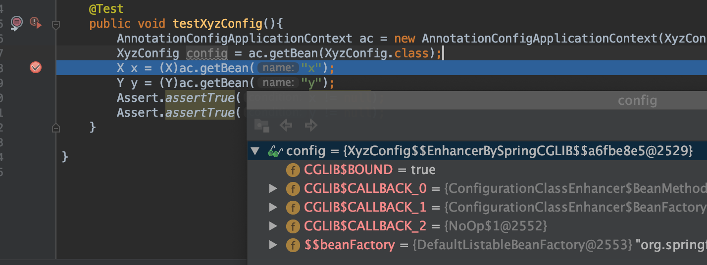
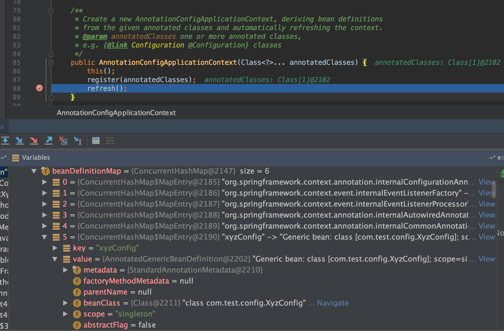
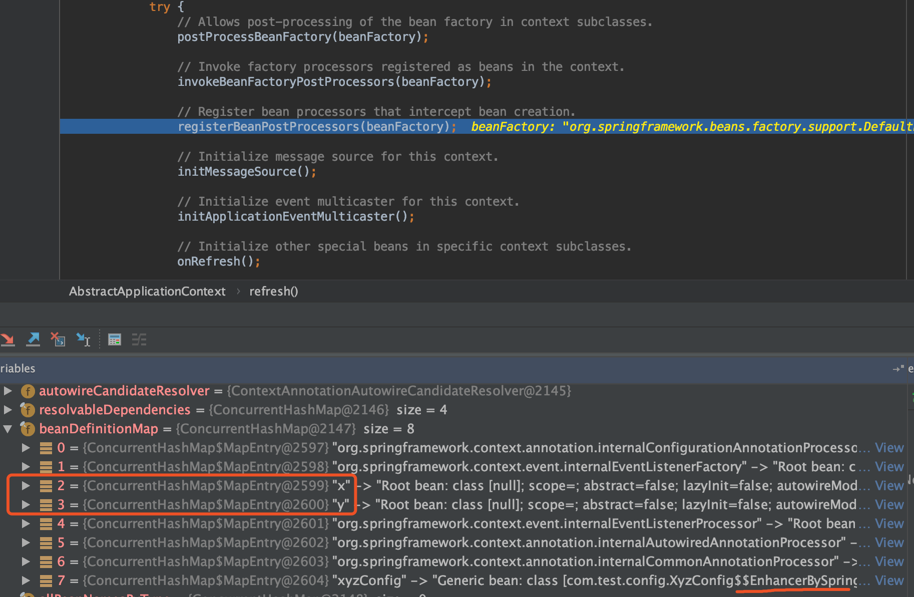
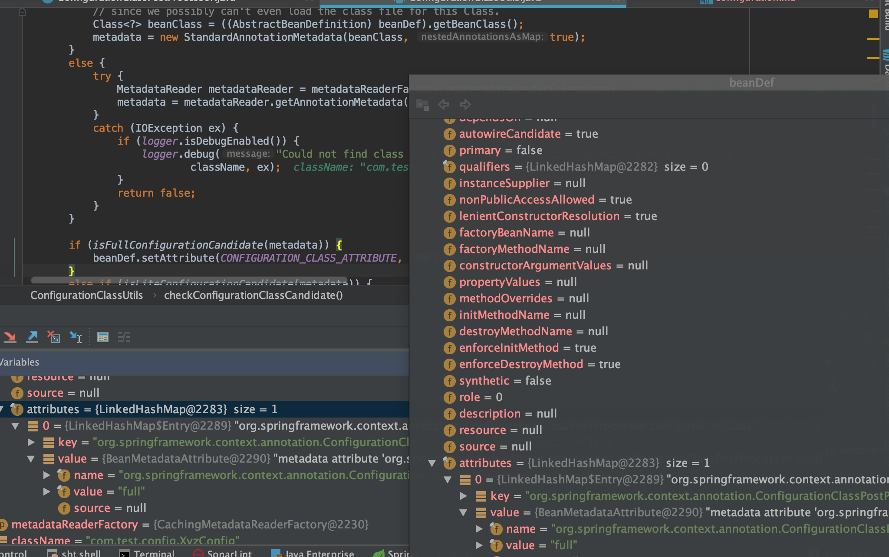
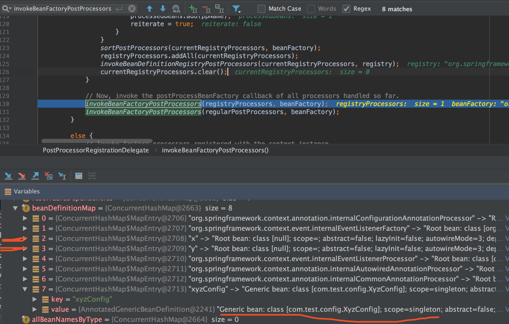
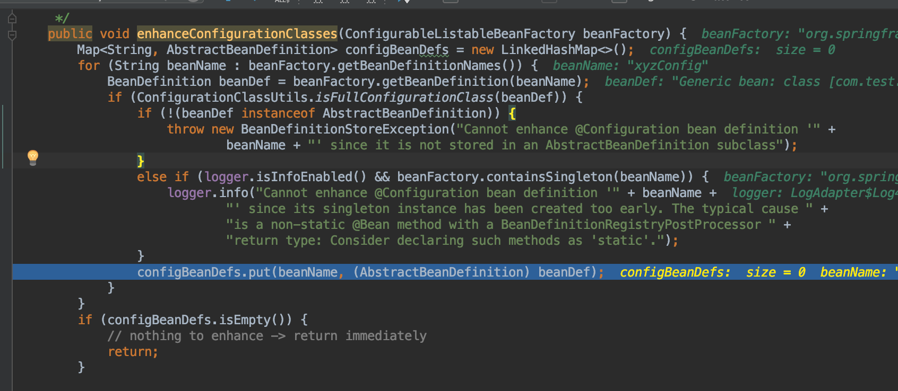
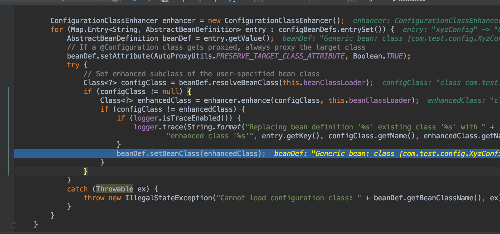
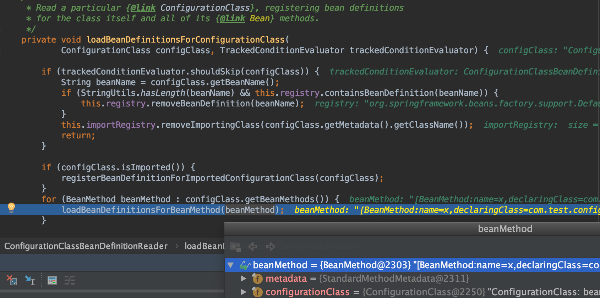
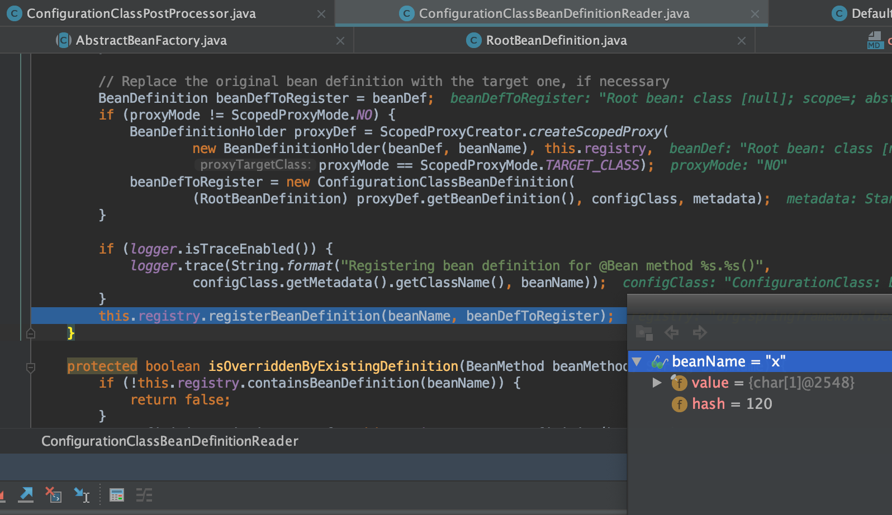
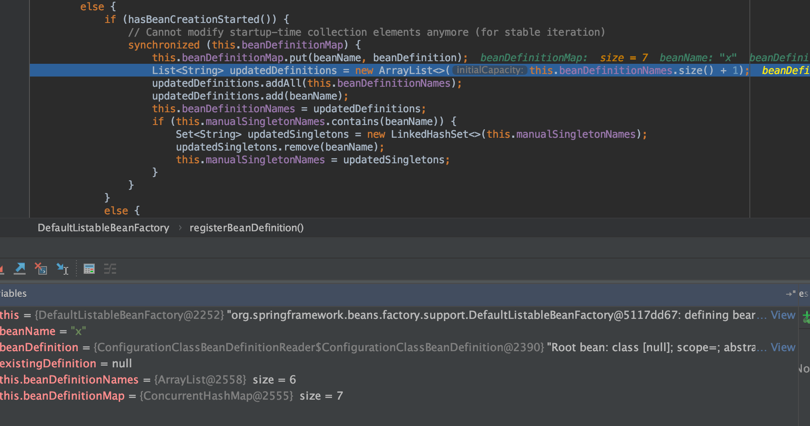

@Configuration
@Configuration注解使用与代理现象
package com.test.config;
import com.test.entity.X;
import com.test.entity.Y;
import org.springframework.context.annotation.Bean;
import org.springframework.context.annotation.Configuration;
/**
* @Author mubi
* @Date 2020/7/8 22:38
*/
@Configuration
public class XyzConfig {
@Bean
public X x(){
return new X();
}
@Bean
public Y y(){
x();
return new Y();
}
}
- 测试输出如下(
X,Y两个对象都只初始化一次)
init X
init Y
@Configuration会代理XyzConfig对象，确定里面的@Bean是单例的
- debug 查看
XyzConfigBean使用了Cglib代理
@Test
public void testXyzConfig(){
AnnotationConfigApplicationContext ac = new AnnotationConfigApplicationContext(XyzConfig.class);
XyzConfig config = ac.getBean(XyzConfig.class);
X x = (X)ac.getBean("x");
Y y = (Y)ac.getBean("y");
Assert.assertTrue(x != null);
Assert.assertTrue(y != null);
}

@Configuration到底做了什么操作
常规思路：一步一步debug源码，可能的地方，断点反复看；不过还是需要一定基础和目标
首先要知道：bean一定有个BeanDefinition；其次Spring是有
MapperScan,ComponentScan这种扫描注解功能的所以
@Configuration是扫描出来并加载的吗？显然Spring提供扫描Bean功能，这需要一个至少一个
@Configuration类，所以@Configuration肯定不是扫描方式的；事实上其实手动register的带着问题看源码，同时还有问题是：bean x,y 是什么时候生成
BeanDefinition并写入到BeanDefinitionMap中的
【*】@Configuration的Bean怎么加入到beanDefinitionMap中
在newAnnotationConfigApplicationContext的时候会执行register(annotatedClasses);方法，紧接着是refresh方法;
AnnotationConfigApplicationContext ac = new AnnotationConfigApplicationContext(XyzConfig.class);
register(annotatedClasses);
会执行doRegisterBean方法注册BeanDefinition；
<T> void doRegisterBean(Class<T> annotatedClass, @Nullable Supplier<T> instanceSupplier, @Nullable String name,
@Nullable Class<? extends Annotation>[] qualifiers, BeanDefinitionCustomizer... definitionCustomizers) {
AnnotatedGenericBeanDefinition abd = new AnnotatedGenericBeanDefinition(annotatedClass);
if (this.conditionEvaluator.shouldSkip(abd.getMetadata())) {
return;
}
abd.setInstanceSupplier(instanceSupplier);
ScopeMetadata scopeMetadata = this.scopeMetadataResolver.resolveScopeMetadata(abd);
abd.setScope(scopeMetadata.getScopeName());
String beanName = (name != null ? name : this.beanNameGenerator.generateBeanName(abd, this.registry));
AnnotationConfigUtils.processCommonDefinitionAnnotations(abd);
if (qualifiers != null) {
for (Class<? extends Annotation> qualifier : qualifiers) {
if (Primary.class == qualifier) {
abd.setPrimary(true);
}
else if (Lazy.class == qualifier) {
abd.setLazyInit(true);
}
else {
abd.addQualifier(new AutowireCandidateQualifier(qualifier));
}
}
}
for (BeanDefinitionCustomizer customizer : definitionCustomizers) {
customizer.customize(abd);
}
BeanDefinitionHolder definitionHolder = new BeanDefinitionHolder(abd, beanName);
definitionHolder = AnnotationConfigUtils.applyScopedProxyMode(scopeMetadata, definitionHolder, this.registry);
BeanDefinitionReaderUtils.registerBeanDefinition(definitionHolder, this.registry);
}
BeanDefinition首先会构造出来,并设置属性，包括如下
- scope
- lazyInit
- dependsOn
- ...
@Override
public void registerBeanDefinition(String beanName, BeanDefinition beanDefinition)
throws BeanDefinitionStoreException {
this.beanFactory.registerBeanDefinition(beanName, beanDefinition);
}
BeanDefinition加入到beanFactory的beanDefinitionMap中
@Override
public void registerBeanDefinition(String beanName, BeanDefinition beanDefinition)
throws BeanDefinitionStoreException {
...
// Still in startup registration phase
this.beanDefinitionMap.put(beanName, beanDefinition);
this.beanDefinitionNames.add(beanName);
this.manualSingletonNames.remove(beanName);
经过
register(annotatedClasses);方法后，入下图xyzConfig的BeanDefinition已经加入到BeanFactory的beanDefinitionMap中了Bean x, y还没有加入到beanDefinitionMap中xyzConfig的BeanDefinition看起来是XyzConfig类自身，没有什么代理

refresh()方法的invokeBeanFactoryPostProcessors(beanFactory);发生了BeanDefinitionMap的改变
当debug执行完这一行后，发现beanFactory的beanDefinitionMap有变化，如下图
- bean x,y 加入到
beanDefinitionMap中了 - 同时发现
xyzConfig被Spring增强了，可能发生了什么代理行为

invokeBeanFactoryPostProcessors(beanFactory);
/**
* Instantiate and invoke all registered BeanFactoryPostProcessor beans,
* respecting explicit order if given.
* <p>Must be called before singleton instantiation.
*/
protected void invokeBeanFactoryPostProcessors(ConfigurableListableBeanFactory beanFactory) {
PostProcessorRegistrationDelegate.invokeBeanFactoryPostProcessors(beanFactory, getBeanFactoryPostProcessors());
// Detect a LoadTimeWeaver and prepare for weaving, if found in the meantime
// (e.g. through an @Bean method registered by ConfigurationClassPostProcessor)
if (beanFactory.getTempClassLoader() == null && beanFactory.containsBean(LOAD_TIME_WEAVER_BEAN_NAME)) {
beanFactory.addBeanPostProcessor(new LoadTimeWeaverAwareProcessor(beanFactory));
beanFactory.setTempClassLoader(new ContextTypeMatchClassLoader(beanFactory.getBeanClassLoader()));
}
}
进入PostProcessorRegistrationDelegate到invokeBeanFactoryPostProcessors方法
其中beanFactoryPostProcessors是空的
public static void invokeBeanFactoryPostProcessors(
ConfigurableListableBeanFactory beanFactory, List<BeanFactoryPostProcessor> beanFactoryPostProcessors) {
// 此方法的这句导致了`beanDefinitionMap`的变化
invokeBeanDefinitionRegistryPostProcessors(currentRegistryProcessors, registry);
此次是ConfigurationClassPostProcessor,即@Configuration类的后置处理器
/**
* Invoke the given BeanDefinitionRegistryPostProcessor beans.
*/
private static void invokeBeanDefinitionRegistryPostProcessors(
Collection<? extends BeanDefinitionRegistryPostProcessor> postProcessors, BeanDefinitionRegistry registry) {
for (BeanDefinitionRegistryPostProcessor postProcessor : postProcessors) {
postProcessor.postProcessBeanDefinitionRegistry(registry);
}
}
进入到ConfigurationClassPostProcessor类的postProcessBeanDefinitionRegistry(registry)方法
/**
* Derive further bean definitions from the configuration classes in the registry.
*/
@Override
public void postProcessBeanDefinitionRegistry(BeanDefinitionRegistry registry) {
int registryId = System.identityHashCode(registry);
if (this.registriesPostProcessed.contains(registryId)) {
throw new IllegalStateException(
"postProcessBeanDefinitionRegistry already called on this post-processor against " + registry);
}
if (this.factoriesPostProcessed.contains(registryId)) {
throw new IllegalStateException(
"postProcessBeanFactory already called on this post-processor against " + registry);
}
this.registriesPostProcessed.add(registryId);
processConfigBeanDefinitions(registry);
}
processConfigBeanDefinitions(registry);处理如下
- 会判断是否有
@Configuration classes（本例有且只有一个xyzConfigbean） - 获取
Configuration配置的bean加入到Set<BeanDefinitionHolder> candidates - 对
candidates中的BeanDefinitionHolder进行校验和bean扫描加载
@Configuration的beanDefinition添加全注解属性
for (String beanName : candidateNames) {
BeanDefinition beanDef = registry.getBeanDefinition(beanName);
if (ConfigurationClassUtils.isFullConfigurationClass(beanDef) ||
ConfigurationClassUtils.isLiteConfigurationClass(beanDef)) {
if (logger.isDebugEnabled()) {
logger.debug("Bean definition has already been processed as a configuration class: " + beanDef);
}
}
else if (ConfigurationClassUtils.checkConfigurationClassCandidate(beanDef, this.metadataReaderFactory)) {
configCandidates.add(new BeanDefinitionHolder(beanDef, beanName));
}
}
- 在遍历
beanDefinitionMap中的已经加入的所有bean中，逐一遍历判断是否是全注解类 - 第一次判断肯定不是，因为
xyzConfig虽然有@Configuration，但是并没有进行任何解析和设置操作 - 判断不是，而后的
checkConfigurationClassCandidate做了操作
ConfigurationClassUtils.checkConfigurationClassCandidate(beanDef, this.metadataReaderFactory)
/**
* Check whether the given bean definition is a candidate for a configuration class
* (or a nested component class declared within a configuration/component class,
* to be auto-registered as well), and mark it accordingly.
* @param beanDef the bean definition to check
* @param metadataReaderFactory the current factory in use by the caller
* @return whether the candidate qualifies as (any kind of) configuration class
*/
public static boolean checkConfigurationClassCandidate(
BeanDefinition beanDef, MetadataReaderFactory metadataReaderFactory) {
// isFullConfigurationCandidate 判断语句：metadata.isAnnotated(Configuration.class.getName());
// 判断是否有@Configuration,这里会判断xyzConfig类是一个全注解类
// 重新设置全注解类的属性，下次就需要再checkConfigurationClassCandidate了
if (isFullConfigurationCandidate(metadata)) {
beanDef.setAttribute(CONFIGURATION_CLASS_ATTRIBUTE, CONFIGURATION_CLASS_FULL);
}

invokeBeanFactoryPostProcessors(registryProcessors, beanFactory);方法实现了代理

在ConfigurationClassPostProcessor类中看到了enhanceConfigurationClasses(beanFactory);
@Override
public void postProcessBeanFactory(ConfigurableListableBeanFactory beanFactory) {
int factoryId = System.identityHashCode(beanFactory);
if (this.factoriesPostProcessed.contains(factoryId)) {
throw new IllegalStateException(
"postProcessBeanFactory already called on this post-processor against " + beanFactory);
}
this.factoriesPostProcessed.add(factoryId);
if (!this.registriesPostProcessed.contains(factoryId)) {
// BeanDefinitionRegistryPostProcessor hook apparently not supported...
// Simply call processConfigurationClasses lazily at this point then.
processConfigBeanDefinitions((BeanDefinitionRegistry) beanFactory);
}
enhanceConfigurationClasses(beanFactory);
beanFactory.addBeanPostProcessor(new ImportAwareBeanPostProcessor(beanFactory));
}
【*】enhanceConfigurationClasses(beanFactory);完成了对@Configuration类的Cglib代理
- debug进入方法可以看到会对beanFactory中所有bean判断是否是全注解
- 因为之前
xyzConfig是已经设置了全注解的，所以这里肯定判断是，并加入到configBeanDefs - 只要
configBeanDefs不是空，程序继续走，就有了代理；如下图的debug，实时也确实如此

- 直接new了
ConfigurationClassEnhancer（即使用的是Cglib代理） - 这里也看到了
xyzConfig全注解bean的beanDefinitiond的beanClass属性变成了代理类

/**
* Post-processes a BeanFactory in search of Configuration class BeanDefinitions;
* any candidates are then enhanced by a {@link ConfigurationClassEnhancer}.
* Candidate status is determined by BeanDefinition attribute metadata.
* @see ConfigurationClassEnhancer
*/
public void enhanceConfigurationClasses(ConfigurableListableBeanFactory beanFactory) {
Map<String, AbstractBeanDefinition> configBeanDefs = new LinkedHashMap<>();
for (String beanName : beanFactory.getBeanDefinitionNames()) {
BeanDefinition beanDef = beanFactory.getBeanDefinition(beanName);
if (ConfigurationClassUtils.isFullConfigurationClass(beanDef)) {
if (!(beanDef instanceof AbstractBeanDefinition)) {
throw new BeanDefinitionStoreException("Cannot enhance @Configuration bean definition '" +
beanName + "' since it is not stored in an AbstractBeanDefinition subclass");
}
else if (logger.isInfoEnabled() && beanFactory.containsSingleton(beanName)) {
logger.info("Cannot enhance @Configuration bean definition '" + beanName +
"' since its singleton instance has been created too early. The typical cause " +
"is a non-static @Bean method with a BeanDefinitionRegistryPostProcessor " +
"return type: Consider declaring such methods as 'static'.");
}
configBeanDefs.put(beanName, (AbstractBeanDefinition) beanDef);
}
}
if (configBeanDefs.isEmpty()) {
// nothing to enhance -> return immediately
return;
}
ConfigurationClassEnhancer enhancer = new ConfigurationClassEnhancer();
for (Map.Entry<String, AbstractBeanDefinition> entry : configBeanDefs.entrySet()) {
AbstractBeanDefinition beanDef = entry.getValue();
// If a @Configuration class gets proxied, always proxy the target class
beanDef.setAttribute(AutoProxyUtils.PRESERVE_TARGET_CLASS_ATTRIBUTE, Boolean.TRUE);
try {
// Set enhanced subclass of the user-specified bean class
Class<?> configClass = beanDef.resolveBeanClass(this.beanClassLoader);
if (configClass != null) {
Class<?> enhancedClass = enhancer.enhance(configClass, this.beanClassLoader);
if (configClass != enhancedClass) {
if (logger.isTraceEnabled()) {
logger.trace(String.format("Replacing bean definition '%s' existing class '%s' with " +
"enhanced class '%s'", entry.getKey(), configClass.getName(), enhancedClass.getName()));
}
beanDef.setBeanClass(enhancedClass);
}
}
}
catch (Throwable ex) {
throw new IllegalStateException("Cannot load configuration class: " + beanDef.getBeanClassName(), ex);
}
}
}
【*】processConfigBeanDefinitions(registry);内继续debug看x()方法的@Bean`加载到beanDefinitionMap

ConfigurationClassBeanDefinitionReader类的loadBeanDefinitionsForBeanMethod方法
- 此方法会判断是否有覆盖的
beanDefinition
// Has this effectively been overridden before (e.g. via XML)?
if (isOverriddenByExistingDefinition(beanMethod, beanName)) {
if (beanName.equals(beanMethod.getConfigurationClass().getBeanName())) {
throw new BeanDefinitionStoreException(beanMethod.getConfigurationClass().getResource().getDescription(),
beanName, "Bean name derived from @Bean method '" + beanMethod.getMetadata().getMethodName() +
"' clashes with bean name for containing configuration class; please make those names unique!");
}
return;
}
- 构造并注册
beanx

在类DefaultListableBeanFactory的registerBeanDefinition方法中可以看到beanDefinitionMap.put("x", beanDefinition)

BeanDefinition全部到位后，接下来就是单例bean生命周期了
参考复习：单例bean生命周期